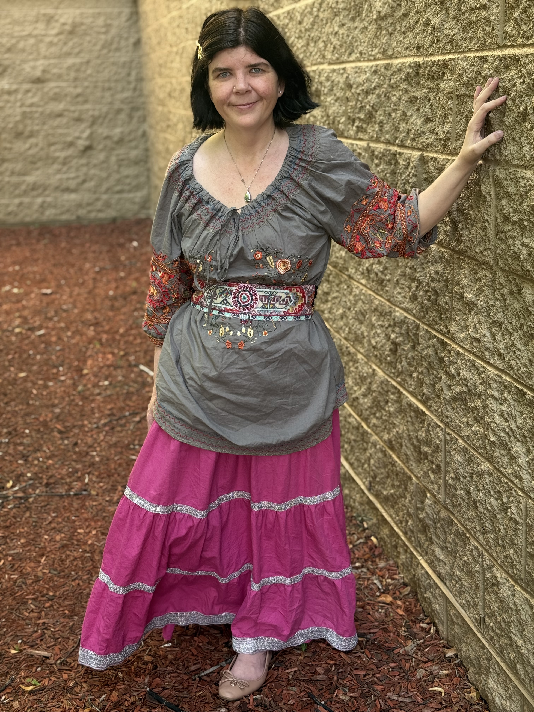

Planning & Preparation
Support for people thinking about mortality or preparing for the future, including conversations about wishes, priorities, comfort, and what matters most.
END-OF-LIFE DOULA · PIONEER VALLEY, MASSACHUSETTS
Comfort, connection, and meaning at the threshold.
Compassionate, non-medical support for those contemplating mortality, facing the end of life, supporting someone they love, or navigating bereavement.
HOW I CAN HELP
There is no single way to approach the end of life. My role is to meet you and your family where you are, offering compassionate presence, practical support, and space for the conversations that matter.
Support for people thinking about mortality or preparing for the future, including conversations about wishes, priorities, comfort, and what matters most.
Calm, non-medical companionship and practical support for people facing a life-limiting diagnosis or approaching the end of life.
Presence, guidance, respite, and emotional support for families and loved ones accompanying someone through the dying process.
Steady, compassionate presence during the final stage of life so that no one has to navigate those hours alone.
Gentle companionship after a death, providing space to talk, remember, process, and begin finding a way forward.
Recorded and edited life-story interviews, written accounts created from recorded conversations, and other personalized ways of preserving memories, stories, and meaning for the people you love.

ABOUT
For much of my life, the process of dying was something I feared. When my grandmother became ill in 2025, I began seeking out every resource I could to better understand what dying might look like, so that I could spend my time with her in a more meaningful and present way.
I watched hospice educational videos, learned about the active dying process, and sought out resources that could help me understand what she — and our family — might experience.
Through that experience, I began to understand that accompanying people through the end of life was work I felt deeply called to do, and I began pursuing the path of becoming an end-of-life doula.
I want to support people wherever they are in this process — whether they are beginning to think about and plan for the end of life, have received a serious or terminal diagnosis, are supporting someone they love, need companionship or vigil support as death approaches, or are navigating grief and bereavement afterward.
My hope is to offer a steady, compassionate presence and help people find comfort, meaning, and connection during one of life's most profound transitions.
A LITTLE ABOUT ME
Outside of this work, I'm usually happiest with something creative or something hands on — knitting, reading, writing, working on a puzzle, or settling in for a board game. I also treasure time spent with my husband and our animals.
I believe every person deserves to approach the end of life as their whole, authentic self. I welcome individuals and families of all backgrounds, beliefs, identities, relationships, and family structures, and I will always respect the people you call family and the life you have built together.
PRICING
$125 / hour
Two-hour minimum per visit.
End-of-life work is deeply personal. I offer a complimentary 30-minute conversation so we can talk about what you need, answer initial questions, and determine whether working together feels like a good fit.
Services are available throughout the Pioneer Valley and surrounding areas. For locations approximately 40 minutes or more from Springfield, Massachusetts, travel time and related travel expenses will be added to the service fee.
Preserve a voice, a story, or a lifetime of memories for the people you love. Legacy projects may include recorded and professionally edited interviews, written life stories developed from recorded conversations, transcripts, and other personalized keepsakes. Projects are individually quoted based on scope, estimated time, recording, editing, and writing needs.
QUESTIONS
An end-of-life doula provides non-medical support to individuals and families before, during, and around the end of life. Support may include companionship, education, planning, practical assistance, caregiver support, vigil presence, legacy work, and simply creating space for conversations that can sometimes be difficult to begin.
No. End-of-life doula care is non-medical and is intended to complement, not replace, hospice, physicians, nurses, therapists, clergy, or other licensed professionals. I can be an additional source of time, presence, and support for both the person who is dying and the people who care about them.
No. End-of-life planning does not have to begin with a diagnosis. I can work with people who simply want to think intentionally about mortality, consider their wishes and priorities, create legacy projects, or have conversations about death and dying in a supportive setting.
Yes. The end of life affects an entire circle of people, not only the person who is dying. I can provide companionship, practical support, respite, and a listening presence for family members, partners, friends, caregivers, and other important people in a person's life.
Vigil support is companionship and non-medical presence as a person approaches death. Depending on the needs of the individual and family, this may include sitting quietly at the bedside, offering reassurance and comfort, helping create a peaceful environment, supporting loved ones, or simply making sure that someone does not have to be alone during those hours.
I serve clients throughout the Pioneer Valley and surrounding areas of Western Massachusetts. For locations approximately 40 minutes or more from Springfield, Massachusetts, travel time and related travel expenses are added to the service fee.
Yes. Doula services are $125 per hour with a two-hour minimum per visit. Legacy projects are priced separately according to the scope and needs of the individual project.
The complimentary 30-minute consultation is an opportunity for us to talk about what is happening, what kind of support you may be looking for, and any questions or concerns you have. It also gives both of us an opportunity to determine whether working together feels like a good fit. There is no obligation to continue after the consultation.
Your values are the ones that matter in this work. I welcome people of all backgrounds, beliefs, identities, relationships, and family structures. My role is not to impose a particular belief about death or dying, but to support you in a way that respects your values, relationships, traditions, and the people you consider family.
CONTACT
You don't need to know exactly what kind of support you need before reaching out. Tell me a little about what is happening, what you're looking for, or simply that you'd like to talk.
Complimentary 30-minute initial consultation.
Light at the Threshold provides non-medical end-of-life doula support. If you are experiencing a medical emergency, please contact the appropriate emergency or medical services.